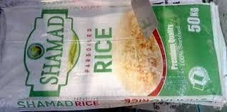

Principal moulin à riz pour du riz local de qualité
Shamad Rice Processing Limited est un moulin à riz de pointe engagé à transformer le riz paddy local en riz poli de haute qualité, sans pierre, pour consommation. Nous travaillons directement avec des riziculteurs d'Adamawa et des régions environnantes, leur offrant un marché fiable pour leur production. Notre technologie de mouture avancée assure un minimum de déchets et une qualité supérieure du produit, contribuant au mouvement "produire local, consommer local" et soutenant l'économie de l'État.